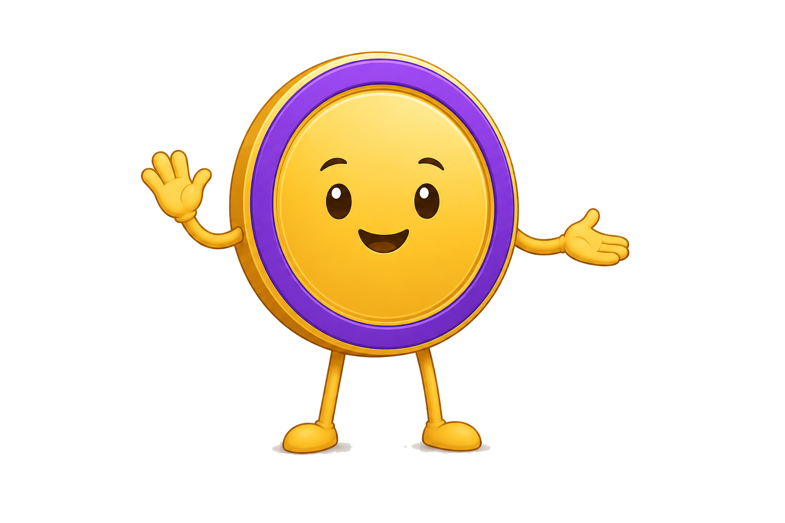

Акт в подписи
Минимум нового: к подписи «шаг N из M» спереди добавляется «Акт K из 2». Точки — только шаги текущего акта. Если в конфиге нет актов, подпись остаётся как сейчас (обратная совместимость).
Акт 1 · шаг 3 из 5 · свёрнуто
ЦельАкт 1 из 2 · шаг 3 из 5
Акт 2 · старт · свёрнуто
ЦельАкт 2 из 2 · шаг 1 из 1
Акт 2 · раскрыто · первый показ (реплика Монетки один раз)
ЦельАкт 2 из 2 · шаг 1 из 1

Новая цель — пусть вложения платят за твою жизнь. Чем больше дохода с них, тем меньше зависишь от зарплаты.- 1Пассивный доход покрывает 15% расходов на жизнь
- ₽Финиш — партия пройдена
Акт 2 · цель почти выполнена · раскрыто
ЦельАкт 2 из 2 · шаг 1 из 1
- 1Пассивный доход покрывает 15% расходов на жизнь
- ₽Финиш — партия пройдена
Плашка акта
Акт — отдельная плашка над словом «Цель». Номер акта заметнее, но блок выше примерно на 18 px, и на экране появляется ещё один акцент.
Акт 1 · шаг 3 из 5 · свёрнуто
Акт 1 из 2
Цельшаг 3 из 5
Акт 2 · старт · свёрнуто
Акт 2 из 2
Цельшаг 1 из 1
Медаль пройденного акта
Подпись как в A, а пройденный акт 1 сжат в золотую медаль «1» перед точками акта 2: видно, что путь продолжается, а не начат заново. Медаль — новый элемент, ей нужен текст для экранного диктора.
Акт 1 · шаг 3 из 5 · свёрнуто (как A)
ЦельАкт 1 из 2 · шаг 3 из 5
Акт 2 · старт · свёрнуто
ЦельАкт 2 из 2 · шаг 1 из 1
Акт 1 пройден
Тот же финал ★ BG-2, отличия: надпись «Акт 1 из 2», заголовок, пунктирная карточка «Дальше — акт 2» с целью. Вторая кнопка — «К сохранениям», а не «Новая игра»: партия продолжается, новая жизнь не нужна.

Акт 1 пройден!
Ты вывел студенческий бюджет в плюс
Партия пройдена
Нынешний финал победы ★ BG-2 с надписью «Акт 2 из 2». Третий показатель — доля расходов, которую покрывает пассивный доход, вместо «ходов подушки».
Партия пройдена!
Вложения платят за твою жизнь